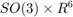
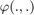
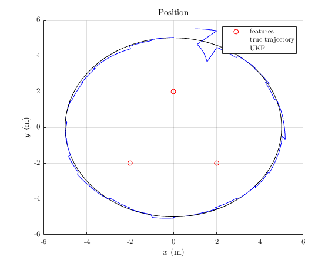
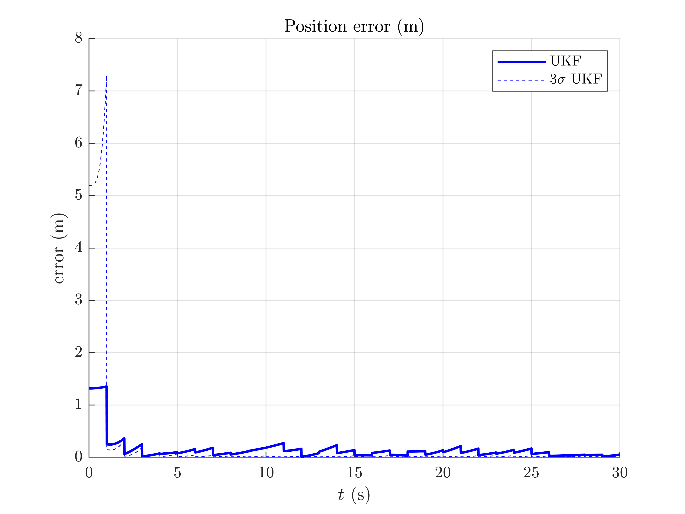
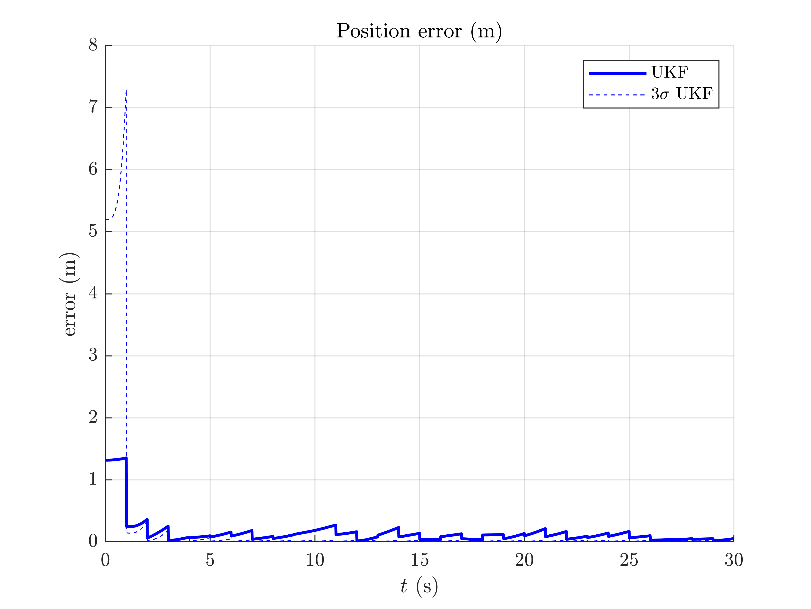

Navigation on Flat Earth - Example
Goals of this script:
- apply the UKF on parallelizable manifolds for estimating the 3D attitude, velocity and position of a moving vehicle.
We assume the reader is already familiar with the approach described in the tutorial.
This script proposes an UKF on parallelizable manifolds to estimate the 3D attitude, the velocity, and the position of a rigid body in space from inertial sensors and relative observations of points having known locations by following the setting of [BB17] and [VCSO2010]. The vehicle is owed with a three axis Inertial Measurement Unit (IMU) consisting in accelerometers and gyroscopes. Observations of the relative position of known features (using for instance a depth camera) are addressed.
Contents
Initialization
Start by cleaning the workspace.
clear all; close all;
Model and Simulation
% sequence time (s) T = 30; % IMU frequency (Hz) imu_freq = 100; % observation frequency (Hz) obs_freq = 1; % IMU standard-deviation noise (noise is isotropic) imu_noise_std = [0.01; % gyro (rad/s), ~ 0.6 deg/s 0.01]; % accelerometer (m/s^2) % number of observed landmark N_ldk = 3; % observation noise standard deviation (m) obs_noise_std = 0.1; % total number of timestamps N = T*imu_freq; % time between succesive timestamps (s) dt = 1/imu_freq; % simulate true trajectory and noised input [states, omegas] = inertial_navigation_simu_f(T, imu_freq, ... imu_noise_std); % simulate amers measurements [ys, one_hot_ys] = inertial_navigation_simu_h(states, T, imu_freq, ... obs_freq, obs_noise_std);
The state and the input contain the following variables:
states(n).Rot % 3d orientation (matrix) states(n).v % 3d velocity states(n).p % 3d position omegas(n).gyro % robot angular velocities omegas(n).acc % robot specific forces
A measurement ys(:, k) contains stacked observation of all visible landmarks.
Filter Design and Initilization
We now design the UKF on parallelizable manifolds. This script embeds the state in , such that:
- the retraction  is the
 exponential for orientation, and the standard vector addition for the vehicle velocity and position.
exponential for orientation, and the standard vector addition for the vehicle velocity and position. - the inverse retraction
 is the logarithm for orientation and the standard vector subtraction for the vehicle velocity and position.
is the logarithm for orientation and the standard vector subtraction for the vehicle velocity and position.
Remaining parameter setting is standard. The initial errors are set around 10 degrees for attitude and 1 meter for position standard deviation. These initial conditions are challenging.
% propagation noise matrix ukf_Q = blkdiag(imu_noise_std(1)^2*eye(3), imu_noise_std(2)^2*eye(3)); % measurement noise matrix ukf_R = obs_noise_std.^2 * eye(3*N_ldk); % initial error matrix such that the state is not perfectly initialized ukf_P0 = blkdiag((10*pi/180)^2*eye(3), zeros(3, 3), eye(3)); % sigma point parameters ukf_alpha = [1e-3, 1e-3, 1e-3]; % define UKF function ukf_f = @inertial_navigation_f; ukf_h = @inertial_navigation_h; ukf_phi = @inertial_navigation_phi; ukf_phi_inv = @inertial_navigation_phi_inv; ukf_weights = ukf_set_weight(9, length(ukf_Q), ukf_alpha); ukf_cholQ = chol(ukf_Q); % start by initializing the filter with an error state ukf_state = states(1); ukf_state.Rot = so3_exp(0*pi/180*ones(3, 1)) * ukf_state.Rot; ukf_state.p = ukf_state.p + [1;0.5;0.7]; ukf_P = ukf_P0; % set variables for recording estimates along the full trajectory ukf_states = ukf_state; ukf_Ps = zeros(N, 9, 9); ukf_Ps(1, :, :) = ukf_P; % measurement iteration number k = 2;
Filtering
The UKF proceeds as a standard Kalman filter with a simple for loop.
for n = 2:N % propagation [ukf_state, ukf_P] = ukf_propagation(ukf_state, ukf_P, omegas(n-1), ... ukf_f, dt, ukf_phi, ukf_phi_inv, ukf_cholQ, ukf_weights); % update only if a measurement is received if one_hot_ys(n) == 1 [ukf_state, ukf_P] = ukf_update(ukf_state, ukf_P, ys(:, k), ... ukf_h, ukf_phi, ukf_R, ukf_weights); k = k + 1; end % save estimates ukf_states(n) = ukf_state; ukf_Ps(n, :, :) = ukf_P; end
Results
We plot the trajectory, the position of the landmarks and the estimated trajectory, along with attitude error, position error, and confidence interval. Since we plot position in the horizontal plan, two landmarks are superposed.
inertial_navigation_results_plot(ukf_states, ukf_Ps, states, dt);
 
 It seems that the proposed UKF meets strong difficulties and takes some time to converge due to the challenging initial conditions. A major problem of the UKF (in this problem and with this choice of retraction) is to be particularly overoptimism regarding attitude error, which is clearly outside the confidence intervals.
Conclusion
This script readily implements an UKF for estimation the 3D pose and velocity of a platform. Results are not particularly satisfying, since the filter difficultly converges to the true state even at the end of the trajectory. But is it not possible to improve the filter accuracy and consistency performances by inflating sensor noise parameters of the filter, or better, by defining a retraction more adapted to the considered problem ?
You are now able to:
- benchmark the UKF and compare it to the extended Kalman filter and invariant extended Kalman filter of [BB17].
- modify the measurement model with a non-linear range and bearing measurement.
- add sensor biases both on the gyro and accelerometer measurements, and estimate them.